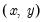
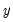
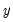

When you select the view, you will first see a dialog box asking for the number of lags to use in the test regressions. In general, it is better to use more rather than fewer lags, since the theory is couched in terms of the relevance of all past information. You should pick a lag length,

, that corresponds to reasonable beliefs about the longest time over which one of the variables could help predict the other.
for all possible pairs of  series in the group. The reported F-statistics are the Wald statistics for the joint hypothesis:
for each equation. The null hypothesis is that  does not
does not Granger-cause

in the first regression and that

does
not Granger-cause

in the second regression.
If you want to run Granger causality tests with other exogenous variables (e.g. seasonal dummy variables or linear trends) or if you want to carry out likelihood ratio (LR) tests, run the test regressions directly using equation objects.


 causes
causes  is to see how much of the current
is to see how much of the current  can be explained by past values of
can be explained by past values of  and then to see whether adding lagged values of
and then to see whether adding lagged values of  can improve the explanation.
can improve the explanation.  is said to be Granger-caused by
is said to be Granger-caused by  if
if  helps in the prediction of
helps in the prediction of  , or equivalently if the coefficients on the lagged
, or equivalently if the coefficients on the lagged  ’s are statistically significant. Note that two-way causation is frequently the case;
’s are statistically significant. Note that two-way causation is frequently the case;  Granger causes
Granger causes  and
and  Granger causes
Granger causes  .
.  Granger causes
Granger causes  ” does not imply that  is the effect or the result of
” does not imply that  is the effect or the result of  . Granger causality measures precedence and information content but does not by itself indicate causality in the more common use of the term.
. Granger causality measures precedence and information content but does not by itself indicate causality in the more common use of the term.